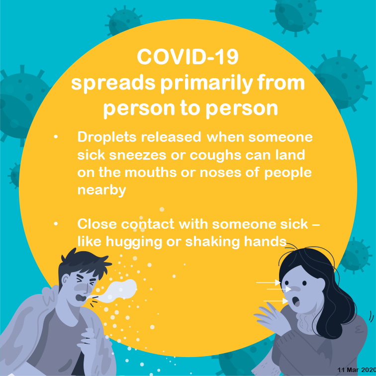

Coronavirus disease (COVID-19) is an infectious disease caused by a newly discovered coronavirus..
Most people infected with the COVID-19 virus will experience mild to moderate respiratory illness and recover without requiring special treatment. Older people, and those with underlying medical problems like cardiovascular disease, diabetes, chronic respiratory disease, and cancer are more likely to develop serious illness.
Coronaviruses are a family of viruses that can cause respiratory illness in humans. They get their name, “corona,” from the many crown-like spikes on the surface of the virus. Severe acute respiratory syndrome (SARS), Middle East respiratory syndrome (MERS) and the common cold are examples of coronaviruses that cause illness in humans. The new strain of coronavirus, COVID-19, was first reported in Wuhan, China in December 2019. The virus has since spread to all continents (except Antarctica).
How does the new coronavirus (COVID-19) spread from person to person?
- When the virus travels in respiratory droplets when an infected person coughs, sneezes, talks, sings or breathes near you (within six feet). This is thought to be the main way COVID-19 is spread.
- When the virus travels in small respiratory droplets that linger in the air for minutes to hours from an infected person who is more than six feet away or has since left the space. This method of spread is more likely to occur in enclosed spaces with poor ventilation.
- From close contact (touching, shaking hands) with an infected person.
- By touching surfaces that the virus has landed on, then touching your eyes, mouth, or nose before washing your hands. (Not thought to spread easily by this method.)
COVID-19 enters your body through your mouth, nose or eyes (directly from the airborne droplets or from transfer of the virus from your hands to your face). The virus travels to the back of your nasal passages and mucous membrane in the back of your throat. It attaches to cells there, begins to multiply and moves into lung tissue. From there, the virus can spread to other body tissues. Governments, health agencies, researchers and healthcare providers are all working together to develop policies and procedures to limit the spread of this virus both globally and from individual to individual.